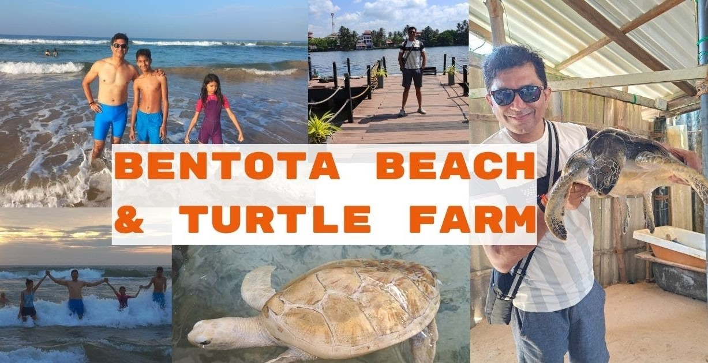

Benthota Turtle Hatchery
The Bentota Turtle Hatchery Project is a popular attraction in Bentota,
Sri Lanka.
The project aims to conserve and protect the eggs of up to five endangered species of turtles from predators and other dangers.
The turtles are allowed to hatch and thrive in a protected area before being set free. The turtle hatchery is one of 18 turtle hatcheries along the southern coast of Sri Lanka.The Kosgoda Sea Turtle Conservation Center,
located in the South Western coastal village of Kosgoda,
is one of the must-visit places in Bentota during a Sri Lanka tour. It was established in 1981 and is one of the 18 hatcheries in Sri Lanka devoted to the proper breeding of this endangered species.
Visitors can get to see up to five endangered species out of seven species of margin turtles in the world here.
Turtle Hatchery was started by the Sri Lankans with a view to protect the turtles from extinction. Earlier, people usually fishermen used to collect the turtle’s eggs and sold it to whoever would pay the higher price. With the commencement of the Turtle Hatchery these eggs were fed and cared for until they were 2 to 4 years old. You can find different species of turtles such as Green Turtle, Leatherback and Olive Ridley. Despite their extinction turtles are still caught by the fishermen for fish and shells which is indeed a very lucrative market.